➺ CURIOSIDADES
Curiosidade 1
Amo animais, principalmente cachorros.

Curiosidade 2
Amo fazer musculação, faço 6x na semana.
Curiosidade 3
Amo as músicas do Michael Jackson.

Curiosidade 4
Amo livros, meu hobbie favorito.